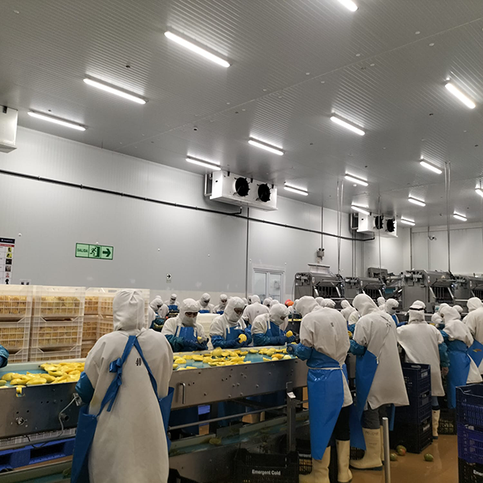
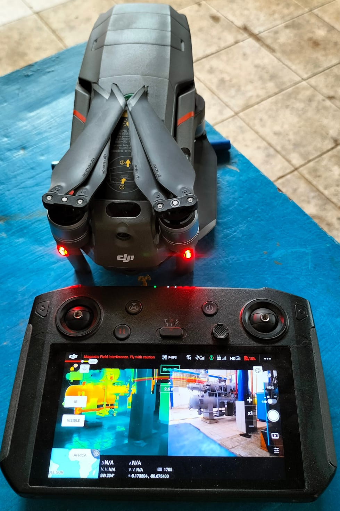
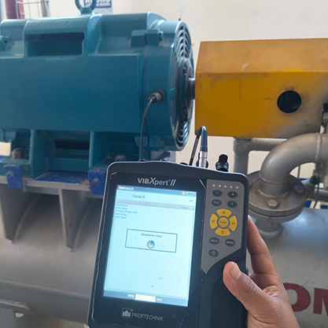

Ofrecemos servicios de buena calidad
En COREFI, Brindamos servicios de refrigeración industrial de excelente calidad para todo tipo de procesamiento de alimentos de congelación necesaria para la producción y la conservación de alimentos así como también en la industria farmacéutica, mantenimiento y reparación en general garantizando una solución eficaz y efectiva para las necesidades de nuestros clientes.
En COREFÍ realizamos la instalación profesional de sistemas de refrigeración adaptados a las necesidades de cada cliente, garantizando eficiencia, seguridad y rendimiento óptimo.

La climatización adecuada asegura que los equipos operen a temperaturas seguras, protege la calidad del producto y mejora las condiciones de trabajo.
Solicitar informaciónEn COREFÍ realizamos la instalación profesional de sistemas de refrigeración adaptados a las necesidades de cada cliente, garantizando eficiencia, seguridad y rendimiento óptimo.

La detección temprana de sobrecalentamientos en estos elementos puede ayudar a programar mantenimientos preventivos y evitar costosas paradas no planificadas.
Solicitar informaciónEn COREFÍ ofrecemos diagnóstico y reparación de sistemas de refrigeración industrial y comercial, solucionando fallas de forma rápida y eficiente.

La vibración anómala en estos equipos puede indicar problemas subyacentes como desalineación, desequilibrio, desgaste de rodamientos, o fallos en los componentes.
Solicitar información